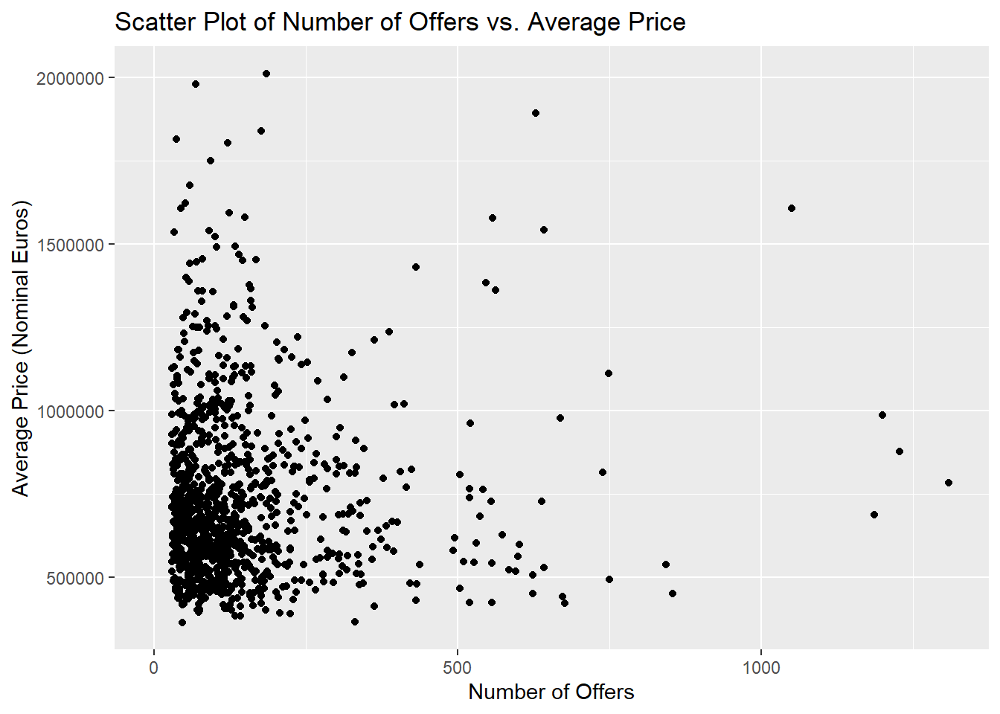
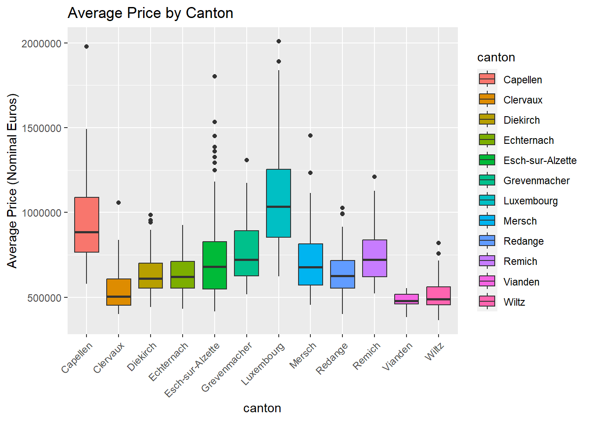

We are going to download data about house prices in Luxembourg.
Our goal is to:
Get data trapped inside an Excel file into a neat data frame;
Convert nominal to real prices using a simple method;
Make some tables and plots.
Getting Data
It can be difficult to take data out of Excel and put it into a tidy data frame. Excel is frequently used as a tool for presenting data in a way that is more readable by humans than by machines. It is essential to understand this distinction since it could have avoided many of the problems that statisticians and researchers encounter. Check out this sample of an Excel file designed for human use below:
What then makes this file unreadable by machines? These are a few problems:
The majority of importing tools anticipate the table to begin in the top-left corner of the spreadsheet, although this is not the case
The spreadsheet begins with a header that has some text and an image in it
Text numbers are separated by “,” to indicate thousands
Each year is on a different sheet
We will deal with these problems.
Let’s import some packages:
library(dplyr)
Attaching package: 'dplyr'
The following objects are masked from 'package:stats':
filter, lag
The following objects are masked from 'package:base':
intersect, setdiff, setequal, union
The following objects are masked from 'package:stats':
chisq.test, fisher.test
Numerous functions for data manipulation, such as group-wise aggregation, are available in the {dplyr} package.For functional programming {purrr} is a package for it. {stringr} is a package for manipulating strings.
{readxl} reads in Excel workbooks and lastly, {janitor} offers several extremely useful functions to accomplish certain typical operations, like renaming every column of a data frame in snake case with ease.
Below part is downloading the raw Excel file.
#the link for the dataurl <-"https://is.gd/1vvBAc"raw_data <-tempfile(fileext =".xslx")download.file(url , raw_data , method ="auto" , mode ="wb")
Preparing Data
Data is not ready to use we need clean it. The below code takes the excel file and saves the sheet names into a variable. Next, we read the required sheet into a data frame using a function called read_clean(), which accepts as arguments the path to the Excel file and the sheet names. Because each Excel sheet has a header on the first ten lines, we use skip = 10 to skip those lines. The year of the data is added to a new column called year as the final action taken by this function. The sheet names are fortunately the years: “2010,” “2011,” and so forth. The data from every sheet is then read into a single list of data frames as we map this function to the list of sheet names.Then, we bind each data frame by row into a single data frame using bind_rows().
However, there is a problem: the average price nominal euros and average price m2 nominal euros columns, which should be of type numeric, are instead of type character. Another problem that you will eventually discover when you examine the data is that the communes’ names are inconsistent. Let’s examine this:
Warning: There were 2 warnings in `mutate()`.
The first warning was:
ℹ In argument: `across(starts_with("average"), as.numeric)`.
Caused by warning:
! NAs introduced by coercion
ℹ Run `dplyr::last_dplyr_warnings()` to see the 1 remaining warning.
# A tibble: 290 × 5
year locality n_offers average_price_nomina…¹ average_price_m2_nom…²
<chr> <chr> <dbl> <dbl> <dbl>
1 2010 Consthum 29 NA NA
2 2010 Esch-sur-Sûre 7 NA NA
3 2010 Heiderscheid 29 NA NA
4 2010 Hoscheid 26 NA NA
5 2010 Saeul 14 NA NA
6 2010 <NA> NA NA NA
7 2010 <NA> NA NA NA
8 2010 Total d'offres 19278 NA NA
9 2010 <NA> NA NA NA
10 2010 Source : Minist… NA NA NA
# ℹ 280 more rows
# ℹ abbreviated names: ¹average_price_nominal_euros,
# ²average_price_m2_nominal_euros
Check the dataset
Some rows should be removed, containing those with missing “localities”. Additionally, the row where locality is equal to “Total d’offrees”. By implementing these changes, data frame sets may be created, one with data on communes, and the other on national prices. It would help us to view filtered data frame.
The purpose of those codes make our job easier by cleaning data. Before starting to analysis, commune should be inside of the dataset. Saving and re-hosting the page always shoul be committed. Otherwise, it will cause some conflict if someone decides to update it. Mostly, Github can be used for similar studies.
Using {rwest}, we can scrape the table from the re-hosted wikipedia page. Then, purrr::pluck() can be used in order to keep the second table from website. Then, column names can turn into machine-friendly names by considering janitor:: clean_names(). Besides, dplyr can be used for some further cleaning and renaming
Assuming that we have all the communes in our data set:
There are many communes, which are not in “current_communes” because of spelling differences or because they have merged into new ones. To avoid the differences in future, we need to get a list of all existing communes from 2010 onwards, and harmonise spelling.
# A tibble: 20 × 3
name year_dissolved reason
<chr> <int> <chr>
1 Bascharage 2011 merged to form Käerjeng
2 Boevange-sur-Attert 2018 merged to form Helperknapp
3 Burmerange 2011 merged into Schengen
4 Clemency 2011 merged to form Käerjeng
5 Consthum 2011 merged to form Parc Hosingen
6 Ermsdorf 2011 merged to form Vallée de l'Ernz
7 Eschweiler 2015 merged into Wiltz
8 Heiderscheid 2011 merged into Esch-sur-Sûre
9 Heinerscheid 2011 merged into Clervaux
10 Hobscheid 2018 merged to form Habscht
11 Hoscheid 2011 merged to form Parc Hosingen
12 Hosingen 2011 merged to form Parc Hosingen
13 Mompach 2018 merged to form Rosport-Mompach
14 Medernach 2011 merged to form Vallée de l'Ernz
15 Munshausen 2011 merged into Clervaux
16 Neunhausen 2011 merged into Esch-sur-Sûre
17 Rosport 2018 merged to form Rosport-Mompach
18 Septfontaines 2018 merged to form Habscht
19 Tuntange 2018 merged to form Helperknapp
20 Wellenstein 2011 merged into Schengen
Many communes have merged to form a new one. We are now able to combine the lists of current and former communes, as well as harmonize the names of these communes, so that the list of current communes will be more accurate.
communes <-unique(c(former_communes$name, current_communes$commune))# we need to rename some communes# Different spelling of these communes between wikipedia and the datacommunes[which(communes =="Clemency")] <-"Clémency"communes[which(communes =="Redange")] <-"Redange-sur-Attert"communes[which(communes =="Erpeldange-sur-Sûre")] <-"Erpeldange"communes[which(communes =="Luxembourg City")] <-"Luxembourg"communes[which(communes =="Käerjeng")] <-"Kaerjeng"communes[which(communes =="Petange")] <-"Pétange"
When we compare the data with every commune that existed since 2010, we do not have any commune that is unaccounted for. We can now start with analysing the data.
Analyzing the data
To analyse the data, we need to count for a Laspeyeres price index that measures how much the price is more expensive or cheaper relative to the base year in 2010.
A simple analysis of five communes will be performed using the R script. This analysis contains all the needed ingredients to illustrate everything else. After that, updating data or reusing the code can assist rerun the analysis.
library(ggplot2)ggplot(data = commune_level_data, aes(x = n_offers, y = average_price_nominal_euros)) +geom_point() +labs(title ="Scatter Plot of Number of Offers vs. Average Price",x ="Number of Offers", y ="Average Price (Nominal Euros)")
ggplot(data = commune_level_data, aes(x = year, y = average_price_nominal_euros)) +geom_line() +labs(title ="Average Price Over Time", x ="Year", y ="Average Price (Nominal Euros)")

# Assuming current_communes is a tibble and commune_level_data is a data frame# Convert current_communes to a data frame if neededcurrent_communes <-as.data.frame(current_communes)# Merge the data based on locality and commune columnsresult <- commune_level_data %>%left_join(current_communes, by =c("locality"="commune")) # Rename the 'canton' column if you wantcolnames(result)[colnames(result) =="canton.y"] <-"canton"# The 'result' dataframe now has the 'canton' column
result <-na.omit(result)ggplot(data = result, aes(x = canton, y = average_price_nominal_euros , fill = canton )) +geom_boxplot() +theme(axis.text.x =element_text(angle =45, hjust =1)) +labs(title ="Average Price by Canton", x ="canton", y ="Average Price (Nominal Euros)")

The box-plot graphic show the average and outlier values of the house price for each Canton in Luxembourg. The Canton of Luxembourg has the highest average price compared to the others, but the Canton of Capellen also has one of the highest outlier prices. Vianden, Wiltz and Clevaux have approximately the lowest prices with respect to the other Cantons. Moreover, according to box-plot analysis, average house prices in Luxembourg range between 500 and 750 thousand €.